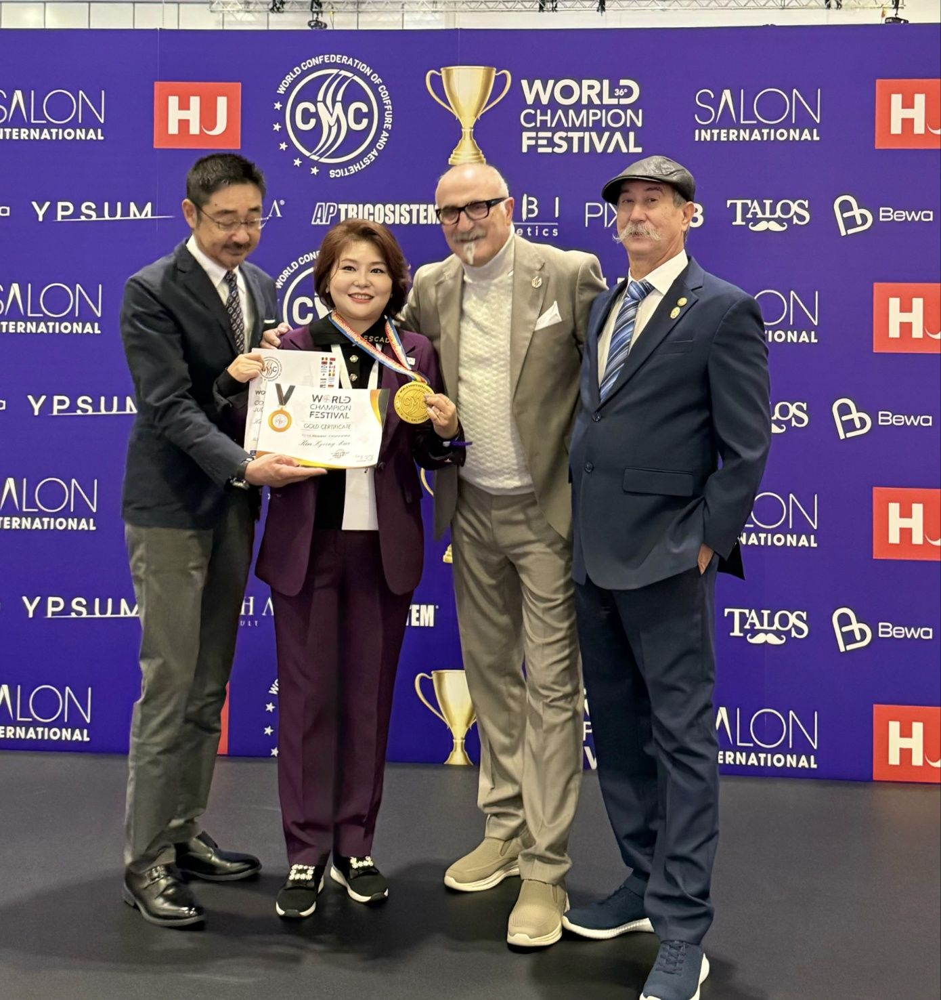
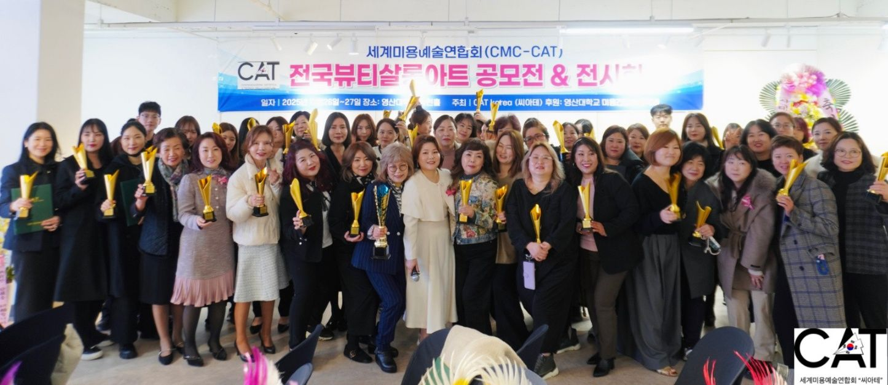
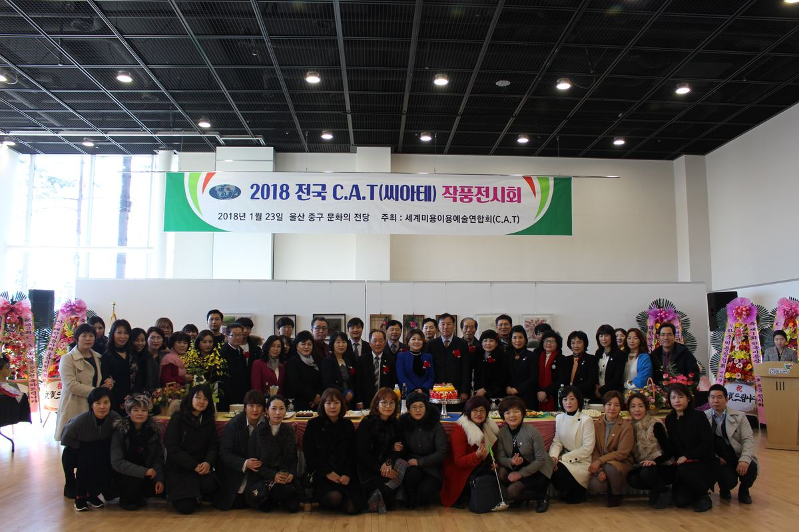
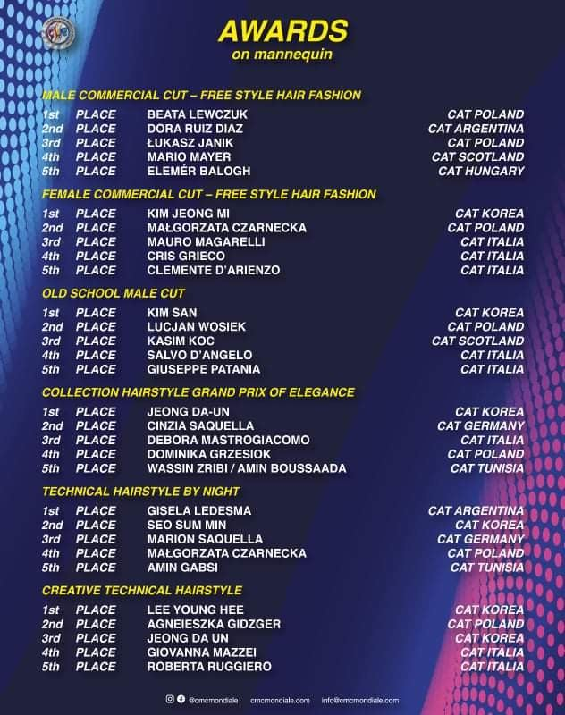
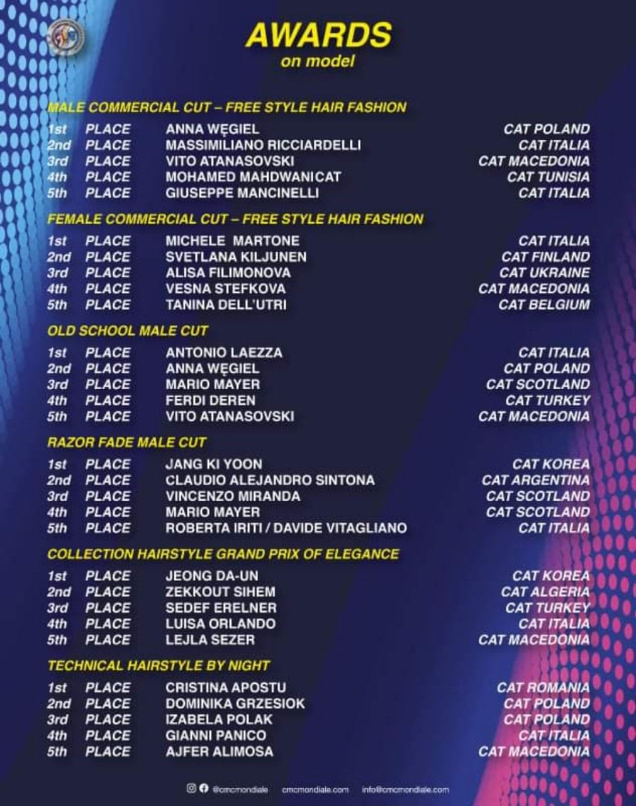
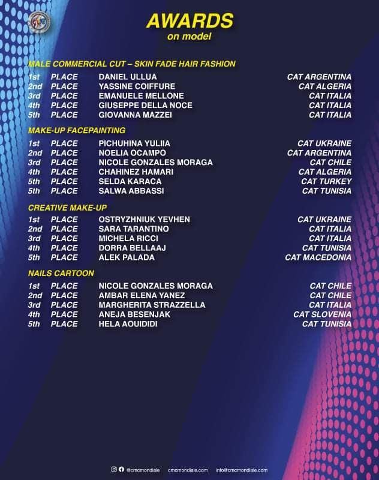
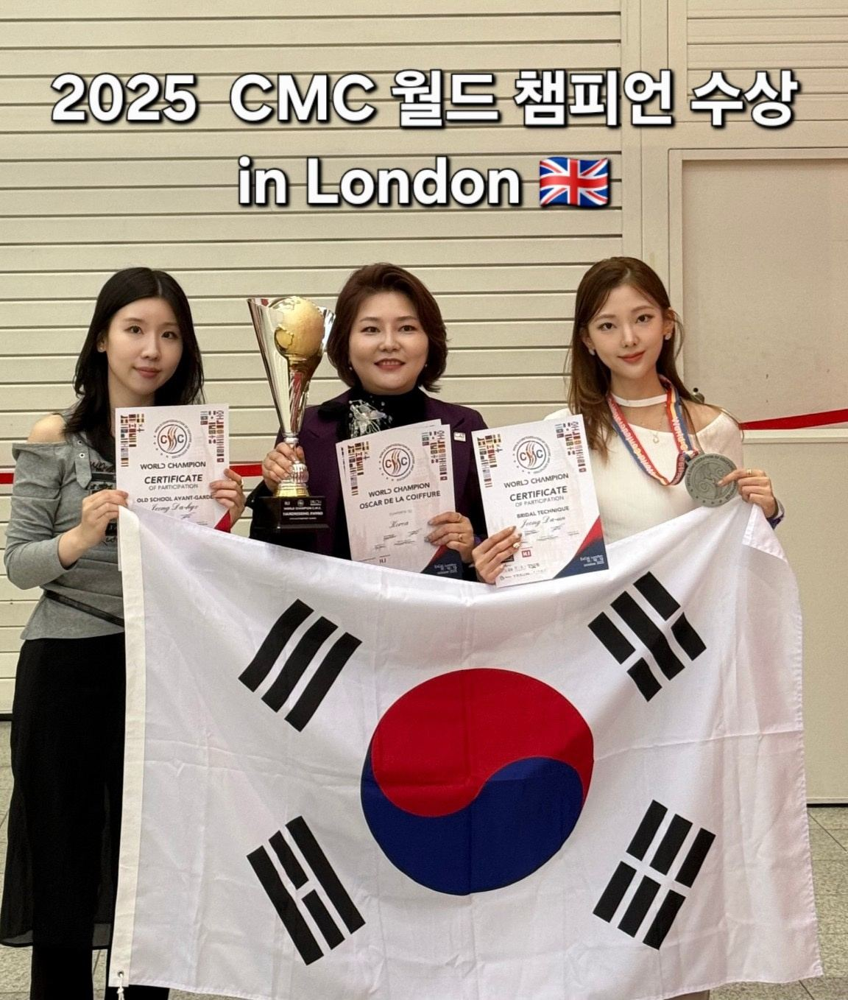
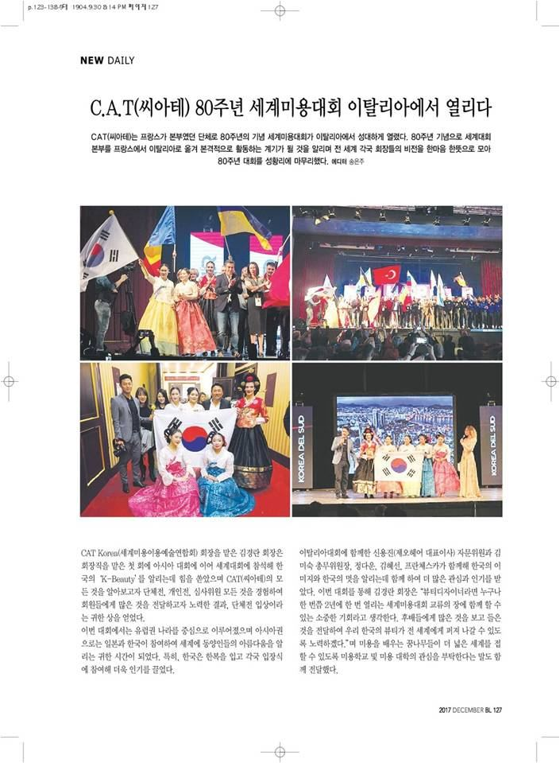
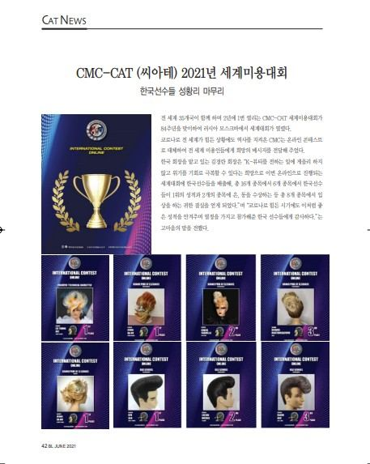
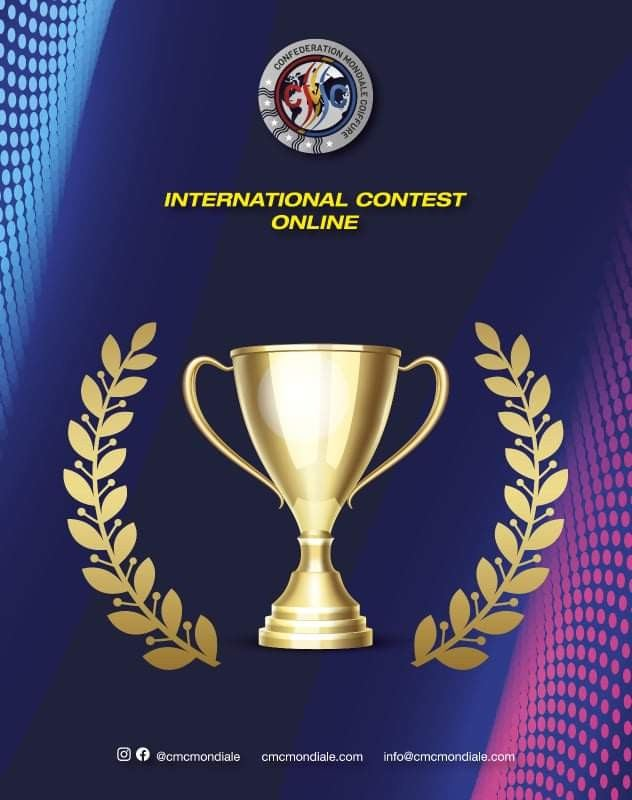

Official Korean Branch
CMC-CAT Korea
Professional Hair Education · International Certification · Global Beauty Network
Professional Hair Education · International Certification · Global Beauty Network
CMC-CAT는 1937년 프랑스에서 시작되어 현재 이탈리아 본부를 중심으로 전 세계 지부가 함께하는 국제 미용 네트워크입니다. CMC-CAT Korea는 국제 미용 교류, 전문 교육, 공정한 대회와 기술 향상을 통해 K-Beauty의 가치를 세계에 알리고 있습니다.
2017년부터 김경란 회장을 중심으로 한국지부 활동을 이어가며, 미용인을 위한 국제적 성장과 교류의 장을 만들어가고 있습니다.

미용 기술을 매개로 세계와 연결하고, 후배 양성과 산업 발전에 기여합니다.
CMC-CAT Korea 주요 활동 연혁
김경란 회장 한국회장 추인 · 일본 CAT 대회 및 이탈리아 CMC 세계대회 공동개최
제2회 공모전 개최 · 세계 회장단 회의 및 HCF 발표 참석
정기총회 개최 · 일본 오사카 세계대회 공동개최
러시아 온라인 콘테스트 CMC 세계대회 공동개최
살롱아트 공모전 개최
전국뷰티살롱아트 공모전 · CMC 이탈리아 세계미용대회 개최
CMC 영국 세계미용대회 · 전국뷰티살롱아트 공모전 개최
국제 기준의 헤어 교육과 자격 과정을 준비합니다.
국제 헤어 교육의 기본 구조와 기술 기준을 학습합니다.
교육자와 지도자를 위한 전문 강사 과정입니다.
고급 기술과 글로벌 교육 역량을 강화하는 심화 과정입니다.

세미나, 기술 교육, 자격 과정, 국제대회 준비를 위한 교육 프로그램을 운영합니다.
교육 일정과 신청 방법은 공지 및 교육 신청 폼을 통해 안내됩니다.
교육 신청 폼 연결 예정대회, 세미나, 교육, 국제 교류 활동








CMC-CAT Korea 한국지부 문의
Tel. 052-201-3930
Email. cat-korea@naver.com
Instagram. @cmc_cat_korea
Address. 울산광역시 동구 봉수로 307